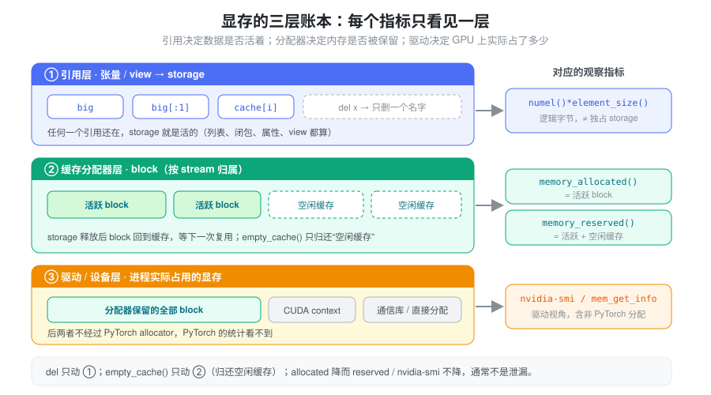
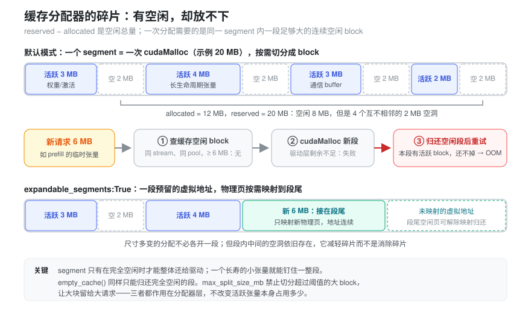
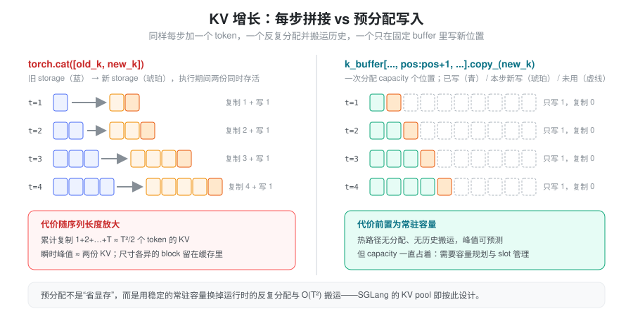
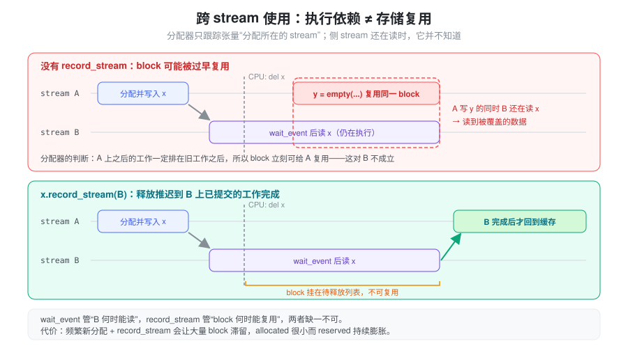

del掉了一个大张量，nvidia-smi上的显存却一点没降——是泄漏了，还是根本不该降？- 调用
torch.cuda.empty_cache()后显存“降下来了”，为什么下一步 decode 反而更慢，OOM 也没解决？ - 活跃张量只有十几 GB，
memory_reserved()却涨到几百 GB，最后报 OOM——这些显存被谁占着？
推理服务的显存不只是权重和 KV cache。中间输出、kernel workspace、allocator 缓存、CUDA Graph 的私有内存池，都可能影响峰值。上面三个问题的答案都不一样：有的是对象仍被引用，有的只是分配器缓存，有的是缓存块因跨 stream 使用而迟迟不能复用。本篇先建立一个分层模型，把“谁持有数据”“谁保留了内存”“峰值在哪里”拆开回答，再看 SGLang 如何在这个模型上规划 KV cache 容量。张量布局与共享 storage 的基础见 Tensor Memory。
抽象：显存是三层账本
一块显存从“被张量使用”到“回到 GPU”，要经过三层，每层各记一本账：
- 引用层（Python 对象 →
storage）：张量只是 storage
的透镜；只要还有任何张量、view、列表、闭包或缓存引用这块
storage，它就是活的。
del x只是删掉一个名字。 - 缓存分配器层（PyTorch caching allocator）：storage 的内存来自分配器管理的 block。storage 不再被引用时，block 通常回到分配器的缓存，等下一次同 stream、尺寸合适的分配复用，而不是立刻还给驱动——因为向驱动申请和释放显存既慢，又可能引入同步。
- 驱动/设备层：驱动看到的是进程实际向 GPU 申请到的内存，其中除了分配器保留的部分，还有 CUDA context、通信库缓冲区以及绕开 PyTorch allocator 的直接分配。
关键的一点：每个观察指标只看到其中一层，不能拿一层的数字去回答另一层的问题。

| 观察项 | 含义 | 不能直接推出什么 |
|---|---|---|
x.numel() * x.element_size() |
张量逻辑元素的数据字节数 | 不代表其独占的 storage 大小 |
torch.cuda.memory_allocated() |
当前张量等活跃分配占用的 CUDA 内存 | 不包含所有进程级 GPU 占用 |
torch.cuda.memory_reserved() |
缓存分配器管理的内存 | 不代表这些内存都被活跃张量使用 |
nvidia-smi |
驱动视角的进程显存占用 | 不能单独判断 Python 张量泄漏 |
逻辑字节数与 storage 也对不上：一个 view
可能只暴露几个元素，却让整块大 storage
持续存活；expand()
的逻辑元素数又可能远大于实际存储。共享 storage
的多个张量也不能简单相加来估算独立占用。
指标定义见 memory_allocated 和 memory_reserved。CUDA context、部分通信库或绕开 PyTorch allocator 的直接分配，会造成驱动统计与 PyTorch 统计之间的差异。
引用层：del 删除的是引用，不是强制释放显存
import torch
big = torch.empty(1024, 1024, device="cuda")
small = big[:1] # view 仍引用整块 storage
del big # storage 仍需为 small 保留
small_copy = small.clone()
del small # 不再通过这个 view 持有原 storage同一张量放进列表、对象属性、闭包或缓存后，删除局部变量不会消除其他引用。detach()
只断开 autograd 关系，仍共享 storage；需要独立数据时才考虑
clone()，并计入复制成本。见 Tensor.detach。
当最后一个相关引用消失且异步使用安全结束后，内存通常先回到
PyTorch 缓存分配器，供下一次分配复用，而不是立即还给 CUDA
驱动。这就是第一个问题的答案：memory_allocated()
下降了，memory_reserved() 和
nvidia-smi 不降是正常现象。
“最后一个引用消失”的时刻也分两种。CPython
主要靠引用计数：计数归零时对象立即析构，storage
立即交回分配器，时机是确定的。但如果张量被困在循环引用里——对象互相引用、闭包捕获了自身所在的对象、保存下来的异常
traceback
仍挂着各层栈帧的局部变量——计数永远不会归零，只能等循环垃圾回收器（gc）在某个不确定的时刻扫到它。于是会出现“逻辑上早已不用、allocated
却要过一阵才降”的现象；排查时先 gc.collect()
再看
allocated，就能区分“真的还有引用”和“只是在等
GC”。
反过来，GC
本身也有成本：对象越多，一次全量回收越慢，还会在请求路径上造成延迟抖动。SGLang
在两处利用
gc.freeze()（把当前存活对象移出后续回收扫描范围）：CUDA
Graph capture
前，model_executor/runner/base_cuda_graph_runner.py
的 freeze_gc() 先 gc.collect()
再冻结，capture
结束后解冻并回收（--enable-cudagraph-gc
可关闭冻结），以加快捕获；服务运行时，utils/common.py
的 freeze_gc(context) 可在预热后由 HTTP
接口触发，冻结 tokenizer/scheduler/detokenizer
进程中的长寿对象，日志里检测到长时间 GC
时也会提示这样做。
分配器层：empty_cache 不是清理活跃张量
torch.cuda.empty_cache()
只作用于第二层：把分配器缓存中当前未使用的
block
还给驱动。它不能释放仍被张量持有的内存，也不能修复引用泄漏。每个
decode step
调用它，会损失缓存复用的价值并增加分配开销；不应作为常规优化手段。
它可能在特定碎片化场景或让其他进程使用空闲显存时有帮助，但不能用“调用后显存下降”证明活跃数据变少。见 empty_cache。
在 SGLang 中，它出现在“生命周期边界”而不是热路径上：例如
Scheduler.flush_cache(empty_cache=True)（managers/scheduler.py）先重置
radix cache、req_to_token_pool 和 KV allocator
等业务缓存，再调用
current_platform.empty_cache()
归还分配器缓存；模型加载和权重导出路径也类似。utils/common.py
的 empty_device_cache()
注释写得很直白：它不清理 SGLang 的
KV/radix/请求缓存，也不释放活跃张量，只转发到后端
allocator。
分配器内部：segment、block 与碎片
“reserved 远大于 allocated 却
OOM”需要再往分配器层里看一层。分配器向驱动申请的单位叫
segment（一次
cudaMalloc），张量拿到的是从 segment 里切出来的
block。几条规则决定了它的行为（以 PyTorch
CUDA caching allocator 的默认实现为准）：
- 尺寸取整：请求按 512 字节取整，所以极小的张量也至少占一个最小 block。
- 两个池：不超过 1 MB 的请求走 small pool，从 2 MB 的 segment 里切；更大的请求走 large pool，较小的大请求共享 20 MB 的 segment，更大的请求则单独申请按 2 MB 取整的 segment。
- 切分与合并：找到的空闲 block 比需要的大时被切开，剩余部分留作空闲 block；释放后与同一 segment 内相邻的空闲 block 合并。
- 按 stream 归属：空闲 block 只给同一
stream 上的后续分配复用，这正是上文
record_stream()要解决的问题。 - 段级归还：segment 只有在其中所有 block
都空闲时才能整体
cudaFree。
于是碎片就出现了：reserved 与 allocated
之差是空闲总量，但这些空闲可能散落在多个 segment
的“空洞”里，没有一个空洞大到能容纳新请求；而每个 segment
又因为夹着活跃 block 而无法归还驱动。分配器找不到合适 block
时，会先尝试 cudaMalloc 新
segment，失败后归还完全空闲的缓存 segment
再重试，仍然失败才抛 OOM。

PYTORCH_CUDA_ALLOC_CONF
中有两个旋钮直接针对这个问题，都需要在进程首次 CUDA
分配之前设置：
expandable_segments:True：segment 改为预留一段虚拟地址，物理页按需映射到段尾、空闲时解除映射。尺寸不断变化的分配（如逐步增长的 batch）可以在同一段里“长大”，而不是每种尺寸各开一段。它不会填平段内中间的空洞，减轻而非消除碎片。max_split_size_mb:N：超过 N MB 的空闲 block 不再被切分给小请求，防止大块被零碎请求蚕食。
expandable_segments 并非没有代价：它基于
CUDA 虚拟内存管理（VMM），这类内存不能走传统的 CUDA IPC
导出。SGLang 的 weight_cache/daemon.py
在启动时检查 PYTORCH_CUDA_ALLOC_CONF /
PYTORCH_ALLOC_CONF，发现
expandable_segments:True 就提前报错，否则依赖
_share_cuda_ 的权重 IPC
导出会在中途失败；distributed/device_communicators/custom_all_reduce_v2.py
则为 VMM
指针单独准备了注册路径。改分配器配置前，要确认进程内是否有依赖
IPC 句柄的组件。配置项说明见 CUDA
memory management。
峰值：每步拼接 vs 预分配
显存问题经常不是“稳态占用太高”，而是“某一瞬间的峰值”。考虑每步拼接 KV：
# 示意：old_k 为 [batch, head, sequence, dim]
k = torch.cat([old_k, new_k], dim=2)这个实现容易理解，但每步都构造新结果并复制旧内容；在
cat
执行期间，旧、新存储同时存活，瞬时占用接近两份
KV。若每次增加一个 token，累计复制规模随序列长度 T 近似增长为 O(T^2)。这与 attention
本身的计算复杂度是不同的成本。尺寸不断变化的分配还会让分配器缓存里留下大量大小不一的
block，增加碎片。
预分配容量后，只写入新位置，可以减少反复分配和历史数据搬运：
# 示意：capacity、position、new_k 的 shape 均由调用方保证正确
k_buffer[:, :, position:position + 1, :].copy_(new_k)
预分配并不消除内存代价：它用较稳定的常驻容量换取更少的运行时分配。多请求服务还需要容量规划、slot 管理和释放策略，见 Memory Pool。
此外，torch.empty()
创建的缓冲区内容未初始化；任何会被读取的位置都必须先写入。padding、graph
bucket 和部分有效的 KV buffer 尤其需要确认有效区域。见 torch.empty。
跨 stream 生命周期：依赖与复用分别处理
分配器的 block 是按 stream 归属管理的：一个张量在 stream A 上分配，释放后，分配器只保证stream A 上之后排队的工作不会和旧数据冲突，所以可以立刻把这块 block 交给 stream A 上的下一次分配。它并不知道 stream B 还在读这块内存。
因此在侧 stream 使用一个 CUDA 张量，要解决两个问题：消费者何时可以读取，以及 allocator 何时可以复用存储。
wait_stream()或 Event 处理 producer/consumer 的执行顺序。record_stream()通知 allocator：该张量的存储还在指定 stream 上使用，不能仅根据原 stream 的进度就复用。

record_stream()
不替代数据依赖；显式维护正确的 stream
同步也可以管理生命周期，但要求调用方更仔细地安排释放。见 Tensor.record_stream。
record_stream()
的代价是延迟释放：block 要等到被记录 stream
上已提交的工作完成后才能回到可复用状态。SGLang 的 DP
attention two-batch-overlap
路径恰好踩到过这一点：dp_gather_partial_async()（layers/dp_attention.py）在通信
stream 上做 gather，并对输入输出调用
record_stream(comm)。紧随其后的
_TBO_PERSIST_BUF
注释记录了一次真实故障——每层、每个 micro-batch 都新
torch.empty 一块尺寸各异的 gather/combine
buffer，又被通信 stream 的 record_stream
拖住，结果活跃工作集只有约 10GB，reserved
却涨到约 270GB，在 ROCm 上触发资源耗尽。修复方式是改用按 key
复用、只增不减的持久
buffer（get_tbo_persistent_buffer()）。layers/moe/token_dispatcher/moriep.py
的 dispatch 路径则出于同样原因刻意不调用
record_stream，改由同一调用内的
wait_event
保证安全。这正是第三个问题的典型答案：allocated
小、reserved
大，问题出在分配器层，而不在引用层。
结合 SGLang：KV cache 容量从哪里来
推理引擎会主动利用上面的分层模型来规划显存。SGLang 的思路是：先加载权重，再测“驱动层还剩多少”，扣掉给运行时临时分配预留的余量，剩下的一次性分配给 KV cache。
get_available_gpu_memory()（utils/common.py）在 CUDA 上先调用empty_device_cache()，再用torch.cuda.mem_get_info()读驱动视角的空闲显存。先清缓存，是为了让分配器缓存里空闲的 block 也被算作“可用”；多卡时取所有 rank 的最小值。KVCacheConfigurator._profile_available_bytes()（mem_cache/kv_cache_configurator.py）用这个空闲值减去pre_model_load_memory * (1 - mem_fraction_static)作为运行时余量（激活、workspace、CUDA Graph 等），剩余部分作为 KV pool 预算；若已加载的权重超出静态预算，会报错并给出建议的--mem-fraction-static。- 预算确定后，
MHATokenToKVPool._create_buffers_normal()（mem_cache/memory_pool.py）按层一次性torch.zeros出k_buffer/v_buffer；之后每步 forward 只经set_kv_buffer()按槽位loc写入，不再为 KV 增长做分配。
所以 --mem-fraction-static
调的并不是“PyTorch 能用多少显存”，而是常驻 KV
容量与运行时临时峰值之间的分界：设得过高，prefill
的临时 attention score、通信 buffer 或 graph capture
可能在余量里放不下而 OOM；设得过低，KV 槽位少，并发和 prefix
复用受限。槽位如何分配、回收与共享见 Memory Pool。
CUDA Graph 私有内存池：被图钉住的显存
CUDA Graph 把 kernel 连同它们读写的地址一起录下来，replay 时原样复用（见 Cuda Graph）。这对分配器提出了一个硬要求：capture 期间分配的中间张量，即使在 Python 里早已释放，它们的地址在图存活期间也不能交给别人——否则下次 replay 会覆盖新主人的数据。PyTorch 的做法是在 capture 期间把分配导向一个私有内存池：图内的分配与释放只在池内进行，池里的 block 不会被图外的普通分配复用，直到图被销毁。
这直接改变了显存账：
- capture
结束后，图内的临时张量在引用层已经不存在，
memory_allocated()不再计入它们；但私有池里的 block 仍被保留，memory_reserved()和驱动视角都包含它们。这是 allocated 小、reserved 大的又一个合法来源，与泄漏无关，empty_cache()也还不掉。 - 每多捕获一个 batch-size 桶就可能多占一份。多张图可以通过
torch.cuda.graph(..., pool=handle)共享同一个池（handle 来自torch.cuda.graph_pool_handle()），前提是这些图不会并发 replay，彼此可以复用中间缓冲。
SGLang
把这一点推到进程级：model_executor/runner_utils/pool.py
的 get_or_create_global_graph_memory_pool()
在首次使用时创建一个全局 graph pool
handle，runner_backend/full_cuda_graph_backend.py
的 capture_session() 取到它，再在每次捕获时以
pool=self._pool 传给 graph
context。该文件的注释说明了设计理由：prefill 和 decode 两类
graph 永远不会同时
replay，共用一个池，只需保留两者中较大的那份 capture
占用，而不是两份相加。
在容量规划上，capture 发生在 KV pool
分配之后，因此 graph 池必须装进
mem_fraction_static
留出的运行时余量里——这正是余量设得过小时 capture 阶段 OOM
的原因。model_runner_components/cuda_graph_setup.py
会在 capture 前后各测一次驱动层空闲显存，并打印
Capture ... CUDA graph end ... mem usage=... GB，这个差值就是图（含私有池）实际吃掉的显存，可以直接拿来校准余量。部分配置下还可开启
post-capture KV
sizing（SGLANG_ENABLE_POST_CAPTURE_KV_SIZING，条件见
ServerArgs.post_capture_kv_sizing_planned()）：model_runner_components/kv_pool_runtime.py
的 compute_post_capture_kv_resize() 在 capture
完成后重新读取空闲显存、扣除余量，再按实测预算调整 KV pool
大小，相当于用实测值代替事先估计的 graph 预留。
定位 OOM 要观察运行阶段与峰值
torch.cuda.synchronize()
torch.cuda.reset_peak_memory_stats()
# 执行需要测量的一段推理工作
torch.cuda.synchronize()
allocated = torch.cuda.memory_allocated()
reserved = torch.cuda.memory_reserved()
peak = torch.cuda.max_memory_allocated()这里 peak
是重置后活跃分配的最高值，包含测量开始时已存在的分配，并不是本次
forward 的增量。
分别测量模型加载、预热、graph capture、prefill 和 decode。只看 forward 完成后的占用，可能错过临时 attention score 或 workspace 的峰值；只看 reserved 又可能误判泄漏。按三层账本排查：
allocated持续增长 → 引用层：查谁还持有张量（列表、缓存、闭包、跨请求复用的对象）。allocated稳定但reserved远大于它 → 分配器层：查尺寸多变的临时分配、碎片和record_stream造成的延迟释放。reserved稳定但nvidia-smi更高 → 驱动层：查 CUDA context、通信库和绕开 allocator 的分配。
读懂 OOM 报错
较新版本 PyTorch 的 OOM 报错本身就是一份三层账本，大致形如：
torch.OutOfMemoryError: CUDA out of memory. Tried to allocate 2.00 GiB.
GPU 0 has a total capacity of 79.15 GiB of which 1.20 GiB is free.
Including non-PyTorch memory, this process has 77.90 GiB memory in use.
Of the allocated memory 70.10 GiB is allocated by PyTorch,
and 6.50 GiB is reserved by PyTorch but unallocated. ...逐项对号入座（数字仅为示意）：
| 报错字段 | 对应层 | 说明 |
|---|---|---|
Tried to allocate |
本次请求 | 这一次需要的连续大小，不是总缺口 |
of which ... is free |
驱动层 | 整张卡还剩多少，包括其他进程留下的 |
this process has ... in use |
驱动层 | 本进程总占用，含 context、NCCL 等非 PyTorch 部分 |
allocated by PyTorch |
引用层 | 活跃张量，即 memory_allocated() |
reserved ... but unallocated |
分配器层 | 缓存中空闲但没能满足本次请求的部分 |
判读方式：reserved but unallocated 已经大于
Tried to allocate
仍然失败，说明空闲在、但被切碎了，应往碎片方向排查（报错末尾也会提示
expandable_segments）；它很小而
allocated
很大，则是活跃数据真的太多，要找峰值来源或调低常驻占用；in use
明显大于 allocated 与 reserved-unallocated
之和，差额在驱动层，PyTorch 统计看不到。
memory snapshot：看见每个 block 是谁分配的
计数器只告诉你“多少”，snapshot 告诉你“是谁、在哪一行、什么时候”：
torch.cuda.memory._record_memory_history(max_entries=100_000)
# 运行可复现问题的一段推理
torch.cuda.memory._dump_snapshot("oom_snapshot.pickle")
torch.cuda.memory._record_memory_history(enabled=None) # 停止记录把 pickle 拖进 pytorch.org/memory_viz，可以看到随时间变化的活跃分配曲线（每个分配附带 Python/C++ 调用栈），以及按 segment 展开的 block 布局——碎片在这里是直接可见的空洞。也可以在捕获 OOM 时立即 dump，定格出错瞬间的状态。记录调用栈有可观的开销，只适合诊断，不要常开；它也只能看到 PyTorch allocator 追踪的分配，驱动层差额仍需其他手段。用法见 Understanding CUDA Memory Usage。
小结
把显存看成三层账本——引用层决定数据是否还活着，分配器层决定内存是否被保留以便复用，驱动层决定
GPU
上实际被占了多少——就能把“谁仍持有数据”“分配器保留了多少”“执行期间峰值在哪里”分开回答。del
只动第一层（且循环引用要等 GC），empty_cache()
只动第二层且只能归还完全空闲的
segment，record_stream() 和 CUDA Graph
私有池则让第二层的 block
在一段时间内不能被别人复用。“有空闲却
OOM”几乎都落在第二层：空闲总量够，但没有一块连续空闲够大。SGLang
这类推理引擎的做法是在启动时测出驱动层余量、一次性预分配
KV、热路径只写不分配，从而把峰值限定在可预测的运行时余量里；稳定的
KV
容量和受控的临时分配，通常比反复清缓存更有助于推理性能和容量预测。